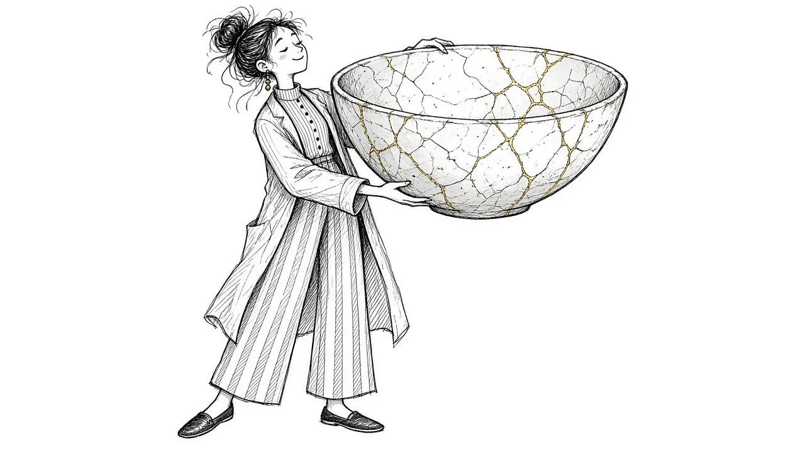

The Honest Truth About Healing From Grief

People often talk about healing from grief as if it were like recovering from a broken bone. There is an injury, then time, then you are better. Many grieving people expect, or are told to expect, that the pain will eventually go away and life will return to normal.
The honest truth is more complicated, and in some ways more hopeful. This guide explores what healing from grief really looks like, why it rarely matches the expectations we are given, and how many people find a way to live well while still carrying their loss.
Healing does not mean forgetting
One of the biggest fears grieving people have is that healing means forgetting. If the pain fades, does that mean they matter less? If I feel happy, am I leaving them behind?
Healing from grief does not require forgetting. Most people who have grieved for a long time say that they still remember, still love, and still miss the person who died. What changes is how the grief fits into their life.
Healing is not the absence of grief. It is learning to carry grief and still live fully.
Grief changes shape
Rather than disappearing, grief often changes shape over time. In the early days, it may feel all consuming, sharp, and constant. Later, it may come in waves, triggered by dates, places, or memories. Eventually, it may feel more like a familiar companion, present but not overwhelming.
Some people describe it like this: the grief does not get smaller, but their life grows around it. The loss remains the same size, but there is more room for other experiences, relationships, and joys.
Our guide to why grief keeps changing shape explores this in more detail.
What healing can look like
Healing from grief looks different for everyone. But many people notice some of the following over time:
- The waves come less often. Grief still arrives, but with more space in between.
- You can remember without falling apart. Memories may bring warmth as well as sadness.
- You feel joy again. At first, joy may feel strange or even guilty. Over time, it becomes more natural.
- You can talk about them. Saying their name or sharing stories feels more possible.
- You find meaning. You may discover new purpose, values, or connections.
- You trust that you can survive hard moments. Anniversaries and holidays may still be hard, but you know you can get through them.
None of these happen on a schedule, and they may come and go. Healing is rarely a straight line.
What healing is not
It can help to be clear about what healing is not.
- It is not a finish line. There is no moment when grief is officially "done."
- It is not moving on. You do not have to leave the person behind. Many people continue to feel connected. Our guide to continuing bonds explores this.
- It is not being happy all the time. Grief and joy can coexist.
- It is not the same for everyone. Your path may look very different from someone else's.
- It is not a sign you loved them less. Healing reflects your capacity to keep living, not a decline in love.
Why healing can feel slow
Grief often takes much longer than people expect. Some reasons:
- The loss is profound. The deeper the bond, the more there is to grieve.
- Grief has many layers. You grieve the person, the relationship, the future, and parts of yourself.
- Life keeps reminding you. Firsts, anniversaries, and everyday moments can bring grief back.
- Other stresses add up. Financial strain, caregiving, or other losses can slow healing.
If you feel like healing is taking too long, our guide to how long grief lasts may offer some reassurance.
Setbacks are part of healing
Many grieving people feel discouraged when, after a period of feeling better, grief comes back strongly. This can feel like going backward.
But grief that returns is not a sign that healing failed. It is part of how grief moves. A song, a smell, or a date can bring a wave that feels as strong as the early days. These waves usually pass, and many people find that they recover from them more quickly over time.
Our guide to grief waves explains this pattern.
What helps healing
There is no single formula, but some things tend to support healing.
Letting yourself grieve
Allowing feelings, rather than pushing them away, often helps grief move. Our guide to beyond fighting grief explains why.
Staying connected
Connection with others who understand, as well as with the person who died, often supports healing.
Taking care of your body
Sleep, food, movement, and rest all play a role in how you cope.
Finding meaning
Many people find that healing involves discovering new ways to honor their loved one or to live according to their values. Our guide to grief and meaning explores this.
Getting support
Counseling, support groups, and other forms of help can make a significant difference, especially when grief feels stuck.
When grief does not seem to heal
For most people, grief becomes more manageable over time. But some people find that grief remains intense and disabling for a long time, interfering with their daily life. This is sometimes called prolonged grief.
If your grief feels as raw as it did at the beginning, many months later, and is making it very hard to function, it may help to seek professional support. Our guide to prolonged grief explains what this looks like and how it can be treated.
Living with grief, not getting over it
Perhaps the most honest truth about healing from grief is this: you may never get over it. But you can learn to live with it.
Many people say that, years later, they still miss their loved one. They still cry sometimes. But they also laugh, love, work, travel, and find meaning. The grief has become part of their story, woven into who they are.
That is not a failure of healing. That is healing.
A gentle hope
If you are in the early days of grief, it may be hard to imagine feeling anything but pain. That is okay. You do not need to believe in healing yet.
For now, it may be enough to know that many people who have walked this path have found that the pain softens. They still carry their loss, but it no longer carries them. And they discover that love, the very thing that makes grief hurt, is also what helps them keep going.
This article is for general information and support. It is not medical or mental health advice. If grief has become unbearable or you are thinking about harming yourself, call or text 988 right now.
Related reading

Acceptance and Remembrance: Two Ideas That Shape Healthy Grief
How acceptance and remembrance work together to help people carry grief while staying connected to the person they lost.

Coping With Grief: A Practical Guide
Practical, everyday ways to cope with grief, from the first days through the months and years that follow.

Self-Compassion in Grief
Grieving people are often harsh with themselves. How self-compassion can ease guilt and help you carry loss.